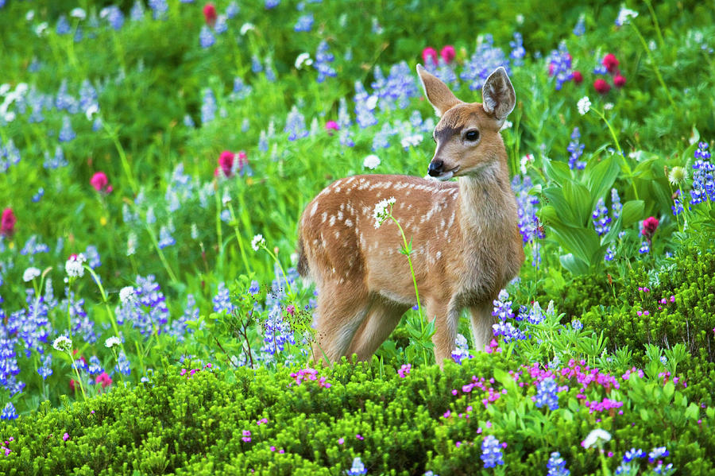
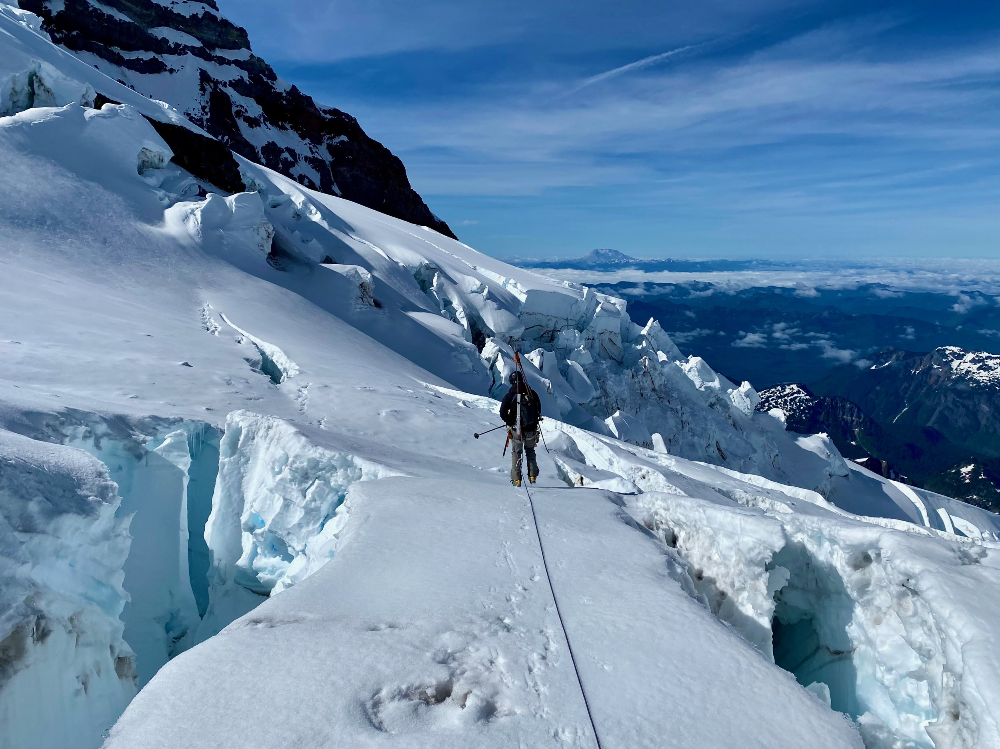
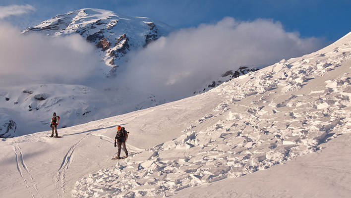

Mount Rainier is an iconic mountain located in Washington State, USA. Standing at 14,411 feet
(4,392 meters), it is the highest peak in the Cascade Range and serves as a stunning backdrop
to the Seattle-Tacoma area. The mountain's glaciers provide water to the region, supporting both
wildlife and human communities. Its striking appearance has made it a significant landmark for
explorers, nature lovers, and scientists studying its geological activity.
Geology and Formation
Mount Rainier is an active stratovolcano formed through repeated eruptions of andesitic lava.
It has over 26 major glaciers, making it one of the most heavily glaciated peaks in the contiguous
United States. The mountain's volcanic activity has shaped its rugged terrain, creating deep
valleys, ridges, and river basins. Geologists closely monitor Rainier for potential future eruptions,
as it poses a significant threat due to its proximity to densely populated areas.
Geology Photo Gallery

Flora and Fauna
Mount Rainier National Park is home to a diverse range of plant and animal species. The lower
elevations feature temperate rainforests with towering Douglas fir, western hemlock, and red
cedar trees. Wildflower meadows bloom in mid-summer, including species like lupine, Indian
paintbrush, and avalanche lilies.
Wildlife in the region includes black bears, elk, and mountain goats. Black bears are commonly
seen foraging for berries and insects, while elk migrate through the valleys in herds. Mountain
goats, adapted to the rocky cliffs, are skilled climbers often spotted on steep slopes. Smaller
species like marmots, pikas, and foxes also inhabit the alpine regions.

Glaciers
Mount Rainier is home to some of the largest glaciers in the continental United States. The
Emmons Glacier, covering approximately 4.3 square miles, is the largest by area. The Carbon
Glacier, on the other hand, is the thickest glacier in the U.S. at 700 feet deep. These glaciers
play a crucial role in regulating water flow to surrounding rivers, which provide fresh water
for both wildlife and human use. Climate change has led to significant glacial retreat in recent
decades, raising concerns about future water availability.

Recreational Opportunities
Mount Rainier National Park offers a variety of outdoor activities for adventurers. Hiking
trails range from short scenic walks to strenuous backcountry routes. The Wonderland Trail,
a 93-mile loop around the mountain, provides breathtaking views of glaciers, waterfalls, and
alpine meadows.
Climbing Mount Rainier is a challenging endeavor that attracts thousands of climbers each year.
Due to unpredictable weather and crevasse hazards, summiting requires proper gear and
mountaineering experience. In winter, the park offers skiing, snowshoeing, and ice climbing
opportunities.